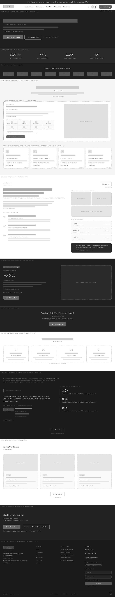
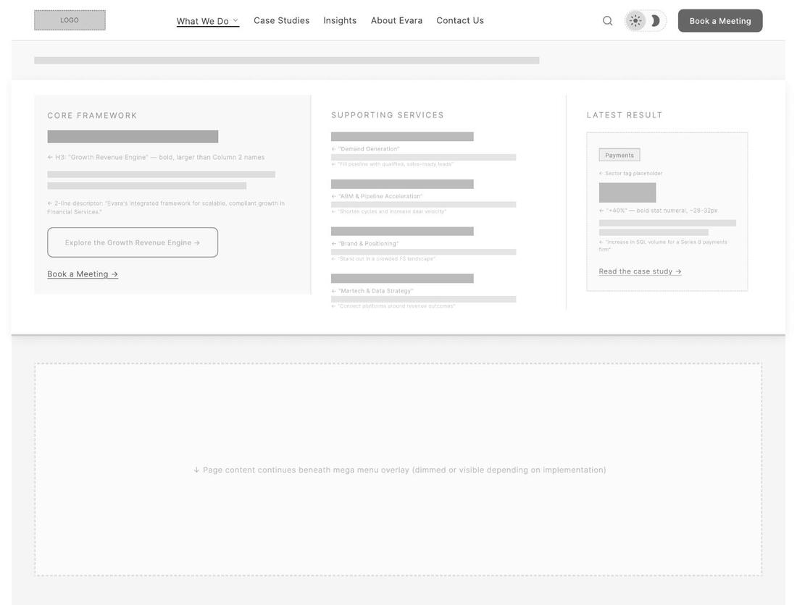
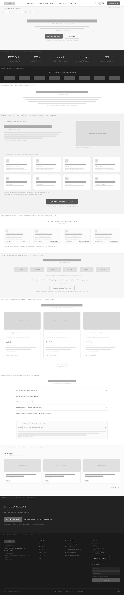
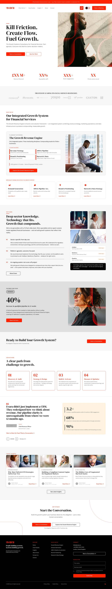
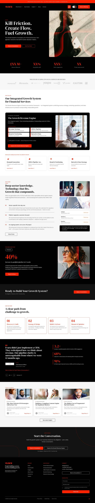
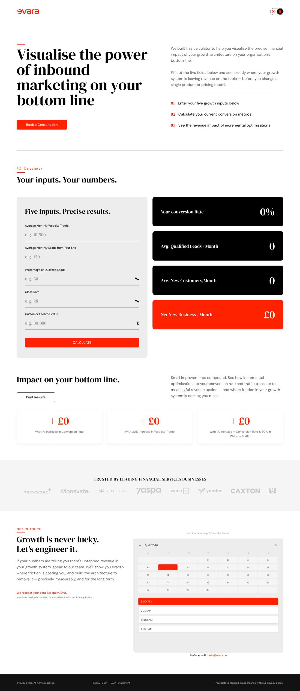
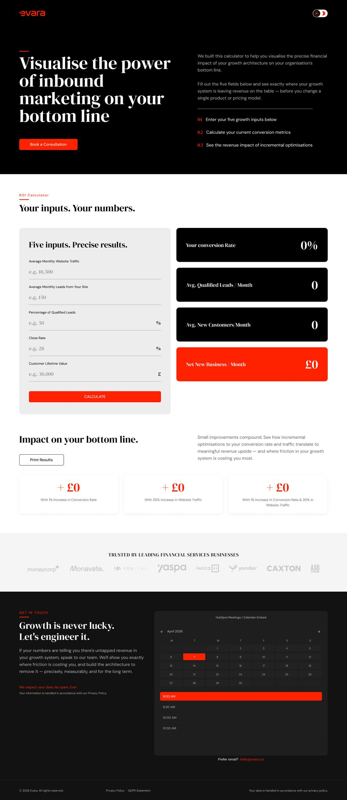
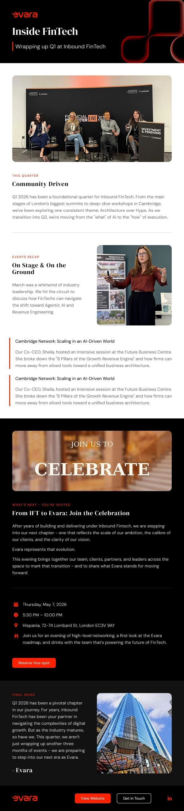
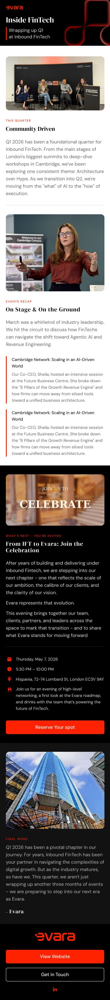

Rebranding the agency I worked for, wireframe to live
Inbound FinTech became Evara. A third party design agency, Design House, compiled the style guide. I did everything after that: the low fidelity structure, the high fidelity design in light and dark, the design system pieces, and the implementation through to development. The conversion decisions were informed by data recorded on the previous site.


Low fidelity first, and defended
The structure was resolved in wireframes before a single brand decision was applied. That is not a process preference, it is a way of keeping the argument about the right thing. In low fidelity nobody can object to a colour, so the conversation stays on hierarchy, sequence and what the page is for.



The full page, both modes


The system, not just the pages
A site handed over as a set of pages decays the moment somebody needs a page you did not draw. These are the pieces that decide whether it holds.


Landing pages and email
The rebrand was not finished when the site launched. A brand only exists once the things around it hold the same line: the campaign landing pages and the newsletter.




What I would do differently
I would have pushed harder for a documented component inventory before the high fidelity stage rather than assembling it as I went. The system pieces here are good, but they were reverse engineered out of finished pages, which means the naming is inconsistent in places and a developer has to infer intent I could have stated.